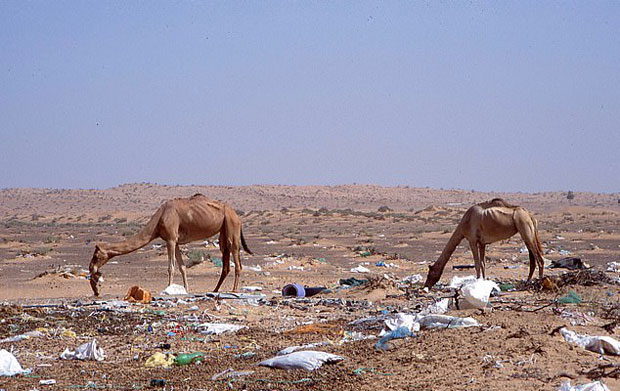

두바이 사막도 플라스틱 쓰레기의 위협을 비껴갈 순 없었다. 15일(현지시간) ‘인디펜던트 사이언스 뉴스’는 중동 사막 지역의 플라스틱 쓰레기가 낙타의 생존을 위협하고 있다고 보도했다.
미국 환경전문가로 해양 플라스틱 쓰레기 연구를 하던 마커스 에릭센 박사는 최근 걸프 지역으로 가 사막의 쓰레기 실태를 점검했다. 박사는 “바다사자, 고래, 거북, 바닷새 등 해양생물이 플라스틱 쓰레기의 위협을 받고 있다는 얘기는 많다. 플라스틱 쓰레기는 비단 바다에 국한된 문제가 아니다. 육지의 문제이기도 하다”고 밝혔다.
사막이 처한 현실은 예상보다 훨씬 심각했다. 에릭센 박사는 “깊은 사막 한가운데서 뼈만 남은 낙타 사체를 발견했다. 모래를 걷어보니 늑골 사이로 커다란 쓰레기 덩어리가 보였다”고 말했다. 죽기 전 낙타가 삼킨 것으로 보이는 쓰레기 덩어리에는 온갖 플라스틱이 뒤엉켜 있었다. 비닐봉지에 밧줄, 유리병, 페트병, 심지어 작은 여행 가방까지 나왔다. 박사는 근처에서 비슷한 낙타 사체 4구를 추가로 발견했다. 에릭센 박사는 “오랜 세월 체내에 축적된 플라스틱 쓰레기가 단단한 덩어리로 석회화한 상태였다. 이 때문에 낙타는 항상 배부른 상태였을 것”이라고 설명했다. 배가 고프지 않으니 낙타는 먹이 섭취를 완전히 멈췄을 것이고, 위장 장애와 탈수, 영양실조에 시달리다 결국 목숨을 잃었을 것이라고 말했다.
모래가 아닌 건 모두 먹이로 착각하는 낙타에게 기름기 혹은 소금기가 남아있는 플라스틱 쓰레기는 별식이었을 거라고 지적했다. 낙타가 삼킨 플라스틱 쓰레기가 뱃속에 독성 박테리아를 유입시켰다고도 전했다. 박사는 “실험실에서 행한 연구의 일부가 아니다. 실제 상황”이라고 강조했다. 박사는 “2008년부터 두바이에서 낙타 사체 3만구를 조사한 결과, 300마리 뱃속에서 플라스틱 덩어리가 관찰됐다”고 밝혔다. 뱃속에 축적된 플라스틱 쓰레기 무게는 최소 3㎏에서 최대 64㎏에 달했다고 덧붙였다. 걸프 지역 낙타 39만 마리 중 1%가 플라스틱 쓰레기를 먹이로 착각해 목숨을 잃는 것으로 추정된다고 부연했다.
박사는 재활용도 제대로 안 된 쓰레기가 매립지에서 바람을 타고 사막으로 유입됐을 것으로 추정했다. 장애물 없이 개방된 사막 특성상 바람에 날린 쓰레기는 깊은 사막까지 도달한다고 우려했다. “재활용 문제는 나 몰라라 하는 일회용 플라스틱 제조사들이 환경을 위한 플라스틱 사용 억제 정책에는 발끈한다”고 꼬집은 박사는 “사막 플라스틱 쓰레기에 대한 대책 마련이 시급하다”며 목소리를 높였다.